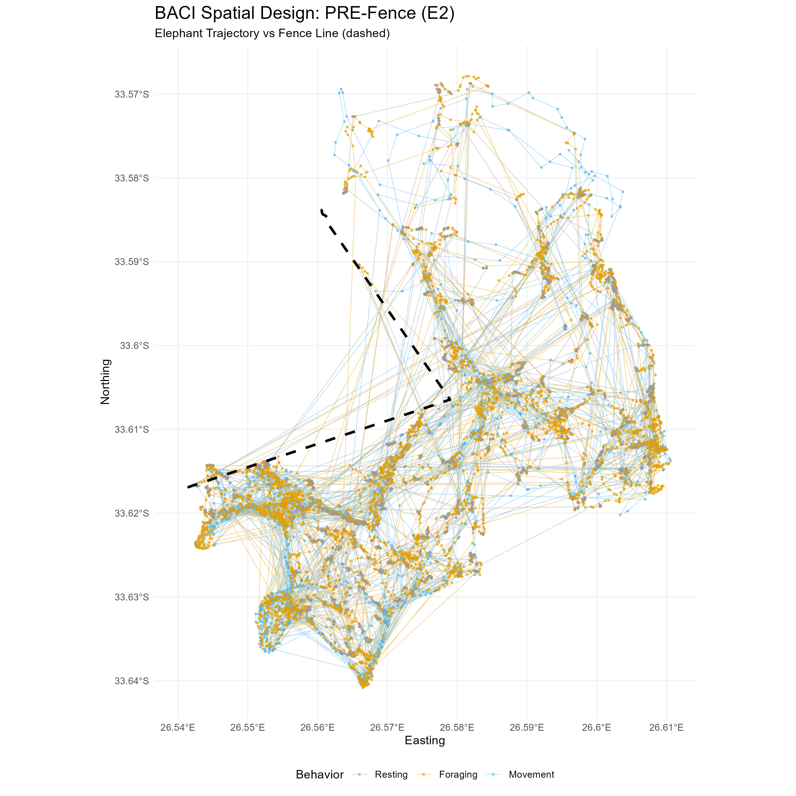
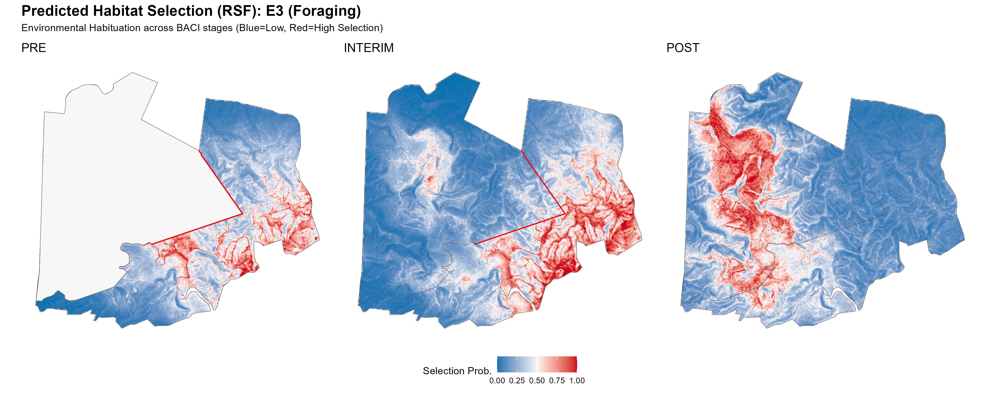
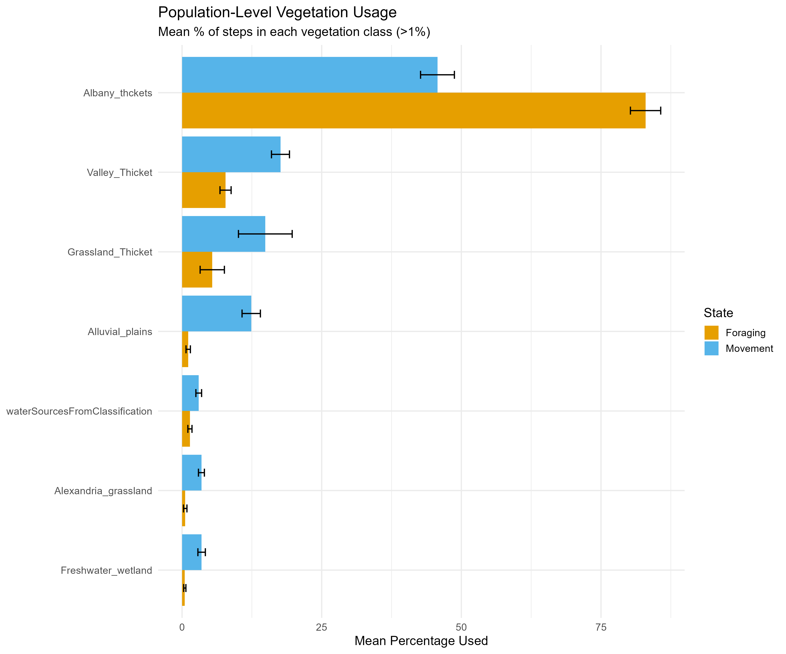
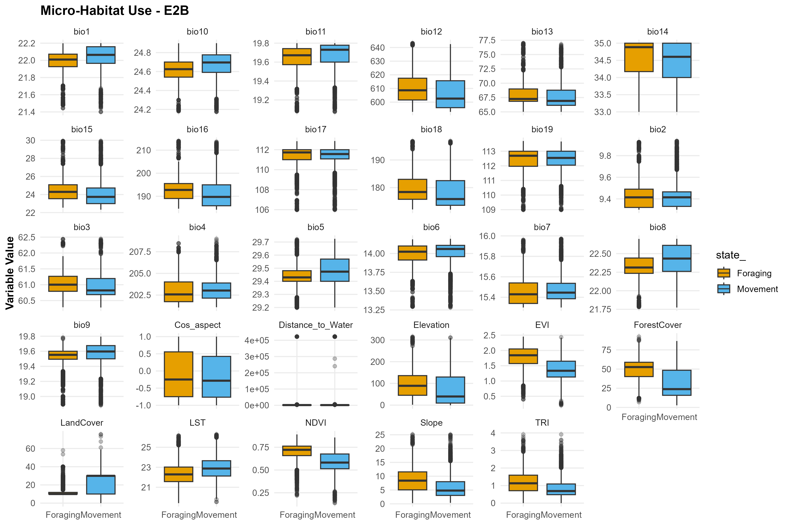

Interactive Features


Animated Trajectories
Watch elephant movements unfold over time with smooth animations, behavioral color coding, and synchronized multi-elephant views.
Explore →

RSF Heatmaps
Toggle habitat selection intensity overlays with adjustable opacity to compare predicted vs. realized occupancy patterns.
Compare →


Real-time Statistics
View behavioral state distributions, movement metrics, and time budgets that update as you scrub through the timeline.
Analyze →